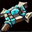

|
Capital: Gnomeregan Gnomeregan fue la capital de los gnomos hasta que una invasión trogg provocó su caída. Gracias a la ayuda de la Alianza, los gnomos han recuperado varias zonas de Gnomeregan, en un esfuerzo que continúa sin descanso para recuperar toda la ciudad. |

Montura racial: Mecazancudo El revolucionario mecazancudo de los gnomos es otra de las maravillas creadas por su capacidad para la ingeniería. Se construyen utilizando compresión a vapor, dinámica servomotora y blindaje de acero reforzado, lo que ofrece al jinete un medio de transporte fiable y duradero. |
||||
| Clases disponibles | Raciales |
|---|---|


|


|


|

|